France audio guides
Play free guides here. Buy the rest and listen in your browser.
Paris

Notre-Dame de Paris
Paris

Sacré-Cœur & Montmartre
Paris

Louvre
Paris

Eiffel Tower
Paris

Musée d'Orsay
Paris
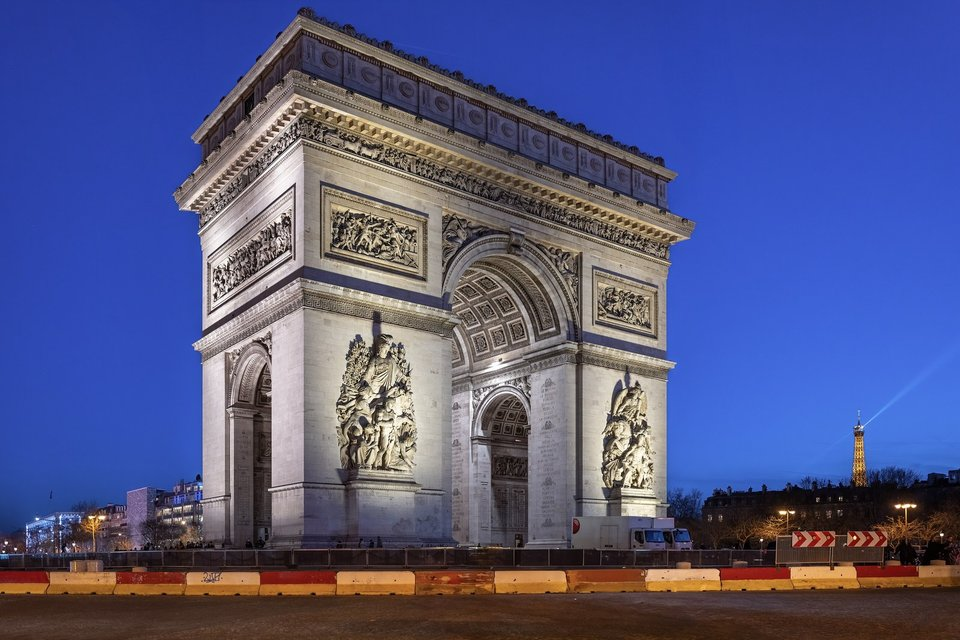
Arc de Triomphe
Paris
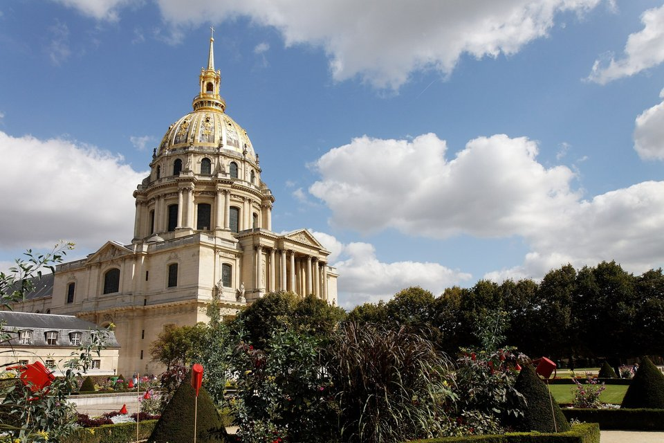
Les Invalides & Musée de l'Armée
Paris

Musée du quai Branly
Paris

Sainte-Chapelle
Paris

Musée de l'Orangerie
Paris

Panthéon
Paris
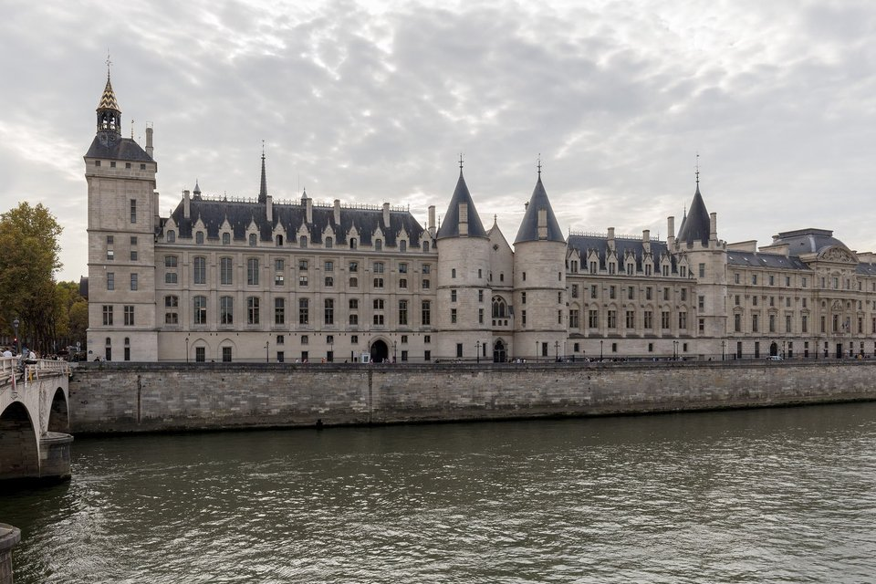
Conciergerie
Paris
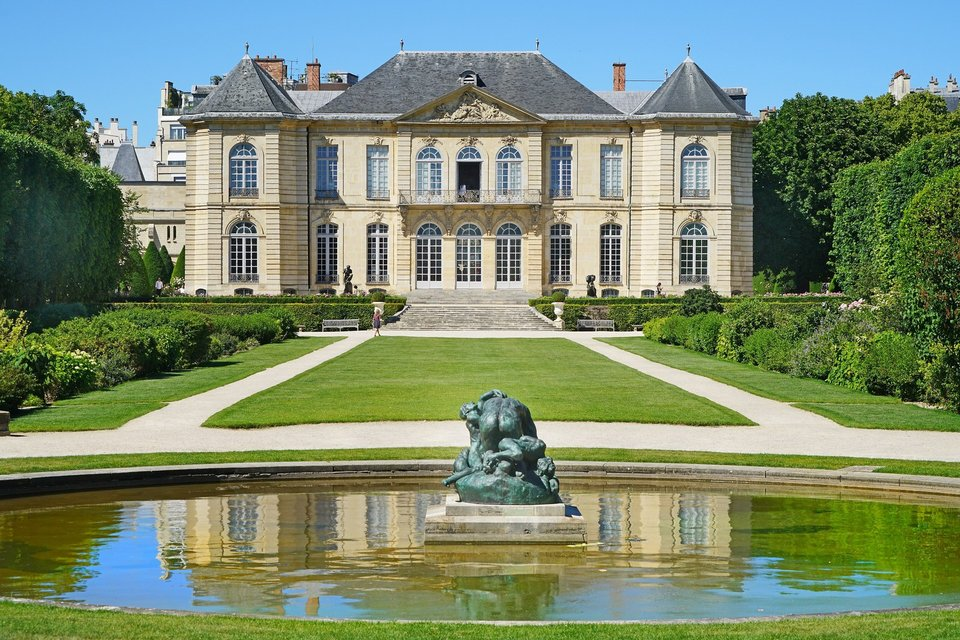
Musée Rodin
Paris

Le Marais
Paris

Catacombs of Paris
Paris

Palais Garnier (Opéra)
Paris

Père Lachaise Cemetery
Paris

Hôtel de la Marine
Paris

Château de Vincennes
Vincennes

Basilica of Saint-Denis
Saint-Denis
Île-de-France & the North

Versailles
Versailles

Mont-Saint-Michel
Mont-Saint-Michel
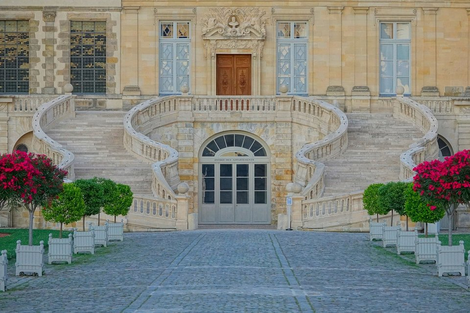
Château de Fontainebleau
Fontainebleau
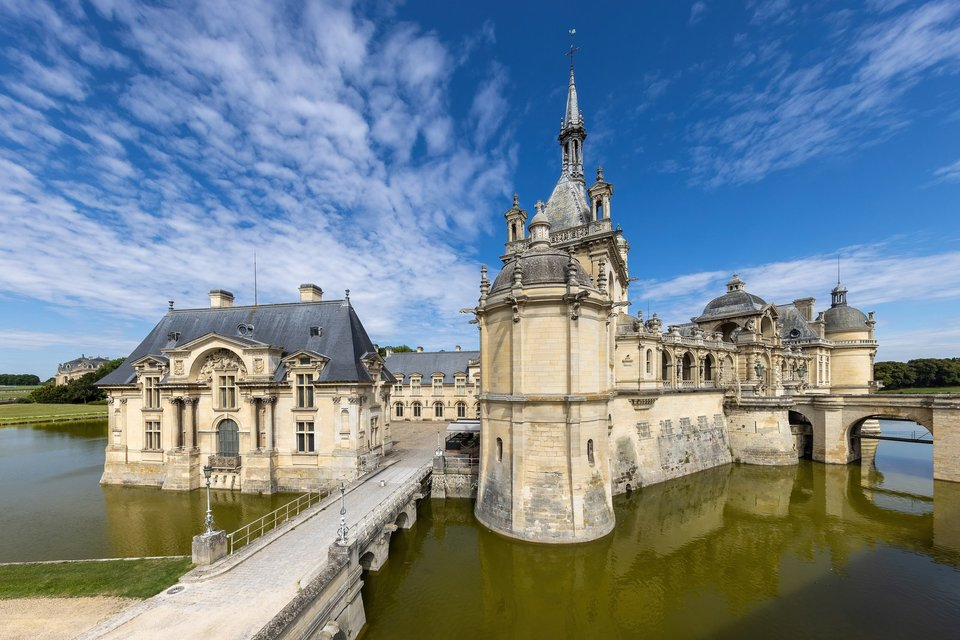
Domaine de Chantilly
Chantilly

D-Day Landing Beaches
Normandy

Giverny
Giverny

Étretat Cliffs
Étretat
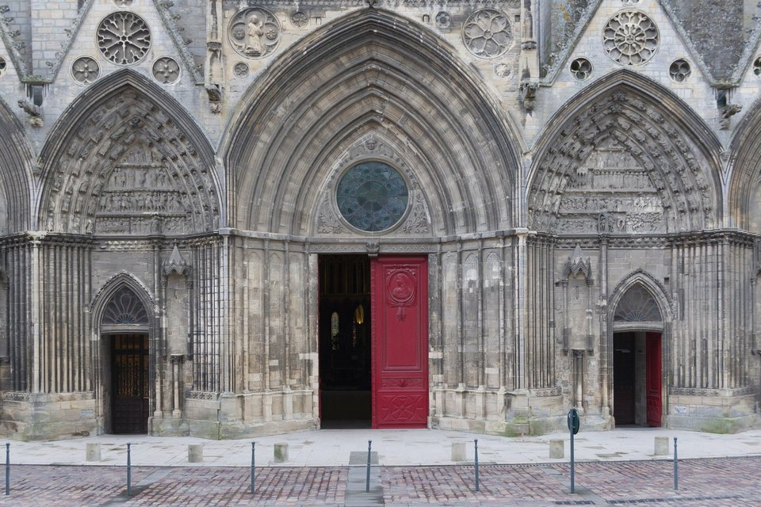
Bayeux
Bayeux

Chartres Cathedral
Chartres

Reims Cathedral
Reims

Château de Pierrefonds
Pierrefonds

Amiens Cathedral
Amiens
The South
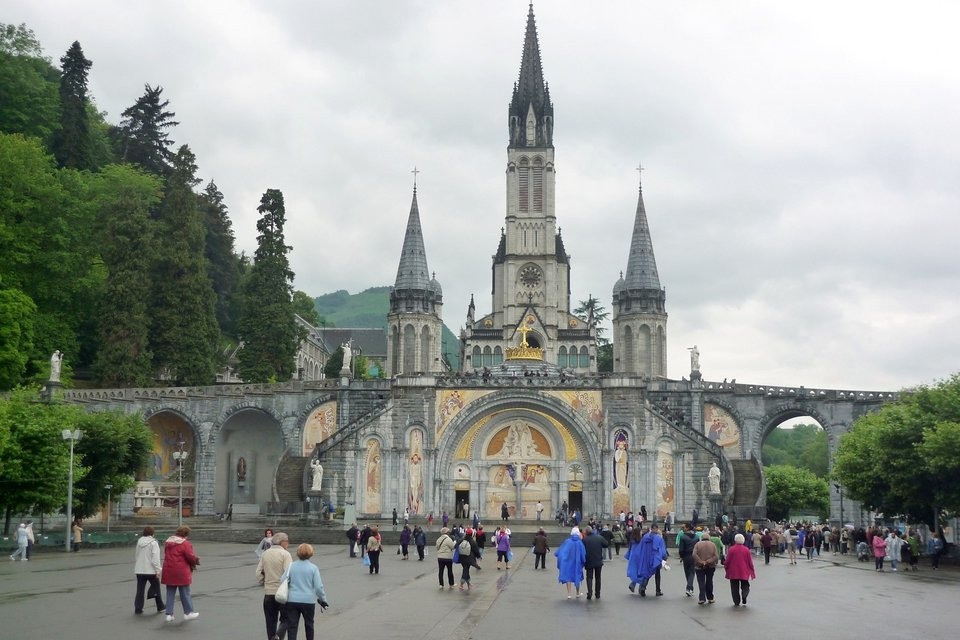
Lourdes Sanctuary
Lourdes
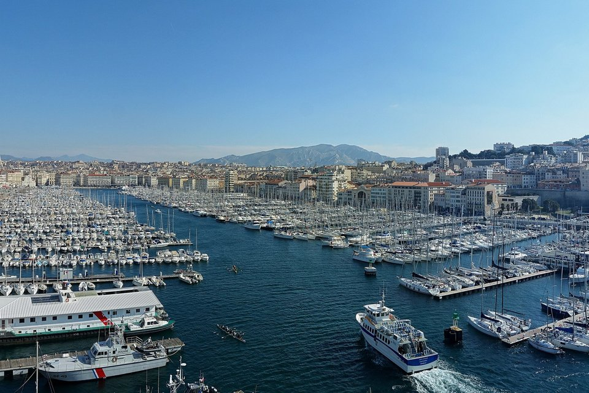
Marseille
Marseille

Nice
Nice

Palais des Papes
Avignon
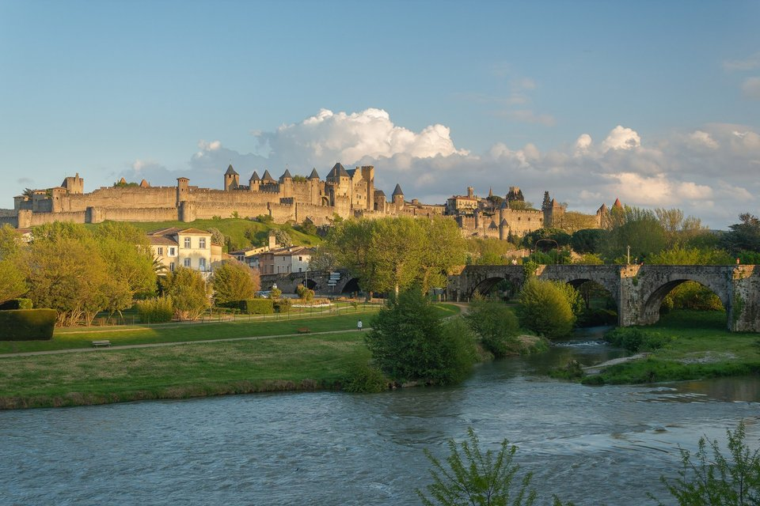
Carcassonne
Carcassonne

Pont du Gard
Vers-Pont-du-Gard

Gorges du Verdon
Verdon

Calanques of Marseille
Marseille

Arles
Arles

Nîmes
Nîmes

Orange Roman Theatre
Orange

Albi
Albi
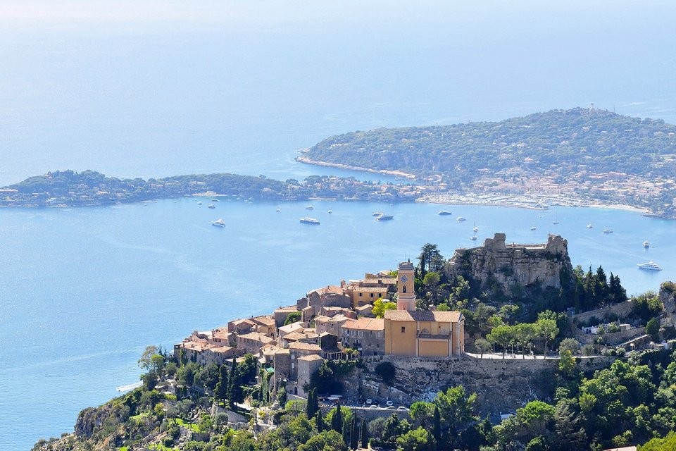
Èze & Saint-Paul-de-Vence
Èze

Aigues-Mortes
Aigues-Mortes
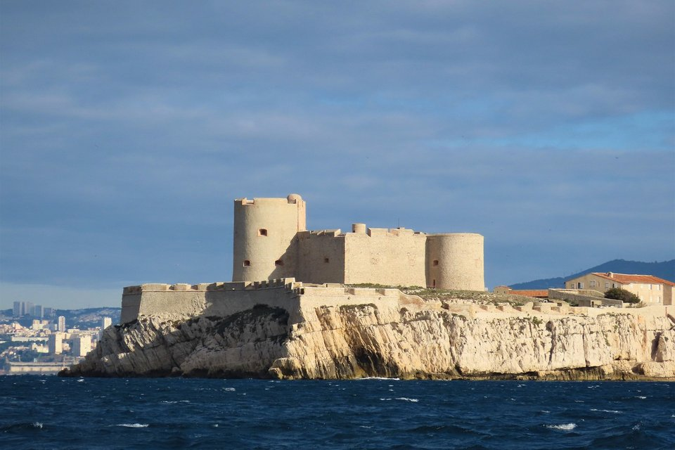
Château d'If
Marseille
Loire Valley


East & the Alps


West & the South-West


No results. Try another name or place.